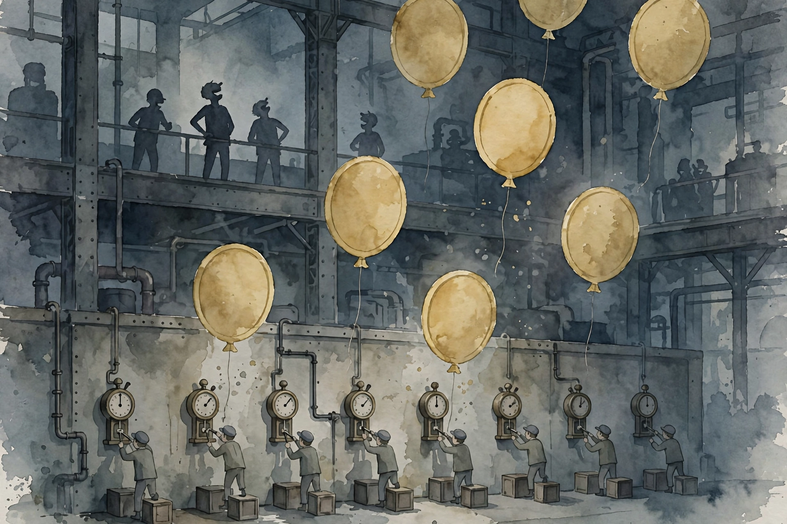

Deep Questions · Companion
Why Smart People Quit Social Media
The case for quitting: curated conversation platforms, the three connected harms, and the slope of terribleness.

Cal Newport. Photo: robertglazer.com (Elevate Podcast). This episode is a monologue: his strongest case against social media.
Watch. The official episode video. Use the chapter menu above to jump to any section of this companion as you listen.
The Wisdom Index: every nugget in this companion
Part 1
Define the Enemy Precisely
Newport opens by defining terms, because the phrase social media means too many things. His target is a specific class: curated conversation platforms. These are services where large numbers of people converse, through text, images, or video, while curation algorithms optimizing for engagement select what each user sees. The classic examples: Twitter, Blue Sky, Threads, Facebook.
Precision matters because many things called social media do not fit. Pinterest is not a conversation platform. Snapchat and WhatsApp are conversation platforms but not algorithmically curated. Instagram and YouTube fall in or out depending on how you use them. The argument that follows is about the curated conversation category, not about every app with a feed.
Nugget 1 · The target
Define the enemy precisely
What happened. Source fact Newport limits his case to curated conversation platforms: mass conversation plus engagement-optimizing curation. Twitter, Blue Sky, Threads, and Facebook are the classic examples.
Why it matters. Interpretation Vague targets produce vague debates. Naming the exact mechanism is what makes the argument falsifiable.
The principle. Interpretation Before you reject a platform, define exactly what you reject.
Part 2
The Three Harms
Ask people what is wrong with these platforms and they list some combination of three harms. First, distraction: the addictive pull that makes us use them more than is healthy, at the expense of things that matter. Second, demoderation: losing moderation around an issue, growing strident, seeing no good faith or basic humanity on the other side, closing ranks with your tribe.
Third, and scariest, disassociation: a complete break from normal human community and normative ethical constraints, where violence to others or to yourself becomes possible, or where you grow numb to such violence. It comes in two flavors: overwhelming rage, and nihilistic withdrawal, the sense that the world is so dark and unredeemable that you might as well cause chaos on the way out. The FBI now uses a term for the second flavor: nihilistic violent extremist.
Nugget 2 · The catalog
The three harms
What happened. Source fact Newport catalogs distraction, demoderation, and disassociation, the last with rage and nihilistic-withdrawal variants, noting the FBI's term nihilistic violent extremist.
Why it matters. Interpretation Most debates stop at distraction. The list gets darker from there, and the darkness is the point.
The principle. Interpretation Judge a platform by its worst predictable outcome, not its average afternoon.
Part 3
The Reassuring Story
Given these harms, why do people stay? Newport says we tell ourselves a reassuring story. Distraction, we admit, but we can manage it with better habits. Demoderation is a problem for the other tribes. Our side is reasonably upset and basically right. Disassociation is scary, but it happens on weird semi-dark-web platforms like Rumble, Kick, or strange Discord servers, not on the platforms we use.
This story explains why so few people change. But Newport argues the story is wrong. The harms are not three separate problems that happen to other people. They are one connected slope, and everyone on the platforms stands on it.
Nugget 3 · The excuse
The reassuring story
What happened. Source fact Newport describes how users admit distraction, assign demoderation to other tribes, and locate disassociation on fringe platforms, which explains why few people quit.
Why it matters. Interpretation The claim that the harms skip you is the most load-bearing sentence in the attention economy.
The principle. Interpretation Distrust any analysis that places every harm one step away from you.
Part 4
The Slope of Terribleness
Here is Newport's model. Imagine a slope. You step onto it in the distraction zone: using the platforms more than is healthy. Stay there and gravity pulls you into demoderation: losing good faith, dehumanizing the other side, policing your own tribe. Keep sliding and you reach disassociation: the world unredeemable, violence thinkable. Around the demoderation-to-disassociation transition, the slope goes underground. Above ground is the mainstream internet. Below ground is the dark web, the barely regulated services where the worst outcomes happen.
the slope of terribleness
Cal Newport's name for the connected harms · Deep Questions
The slope of terribleness
Source: Deep Questions, Why Smart People Quit Social Media, the slope of terribleness. Labels are paraphrase.
Illustration. The slope of terribleness: distraction to demoderation to disassociation. AI-generated watercolor made for this page.
Nugget 4 · The model
The slope of terribleness
What happened. Source fact Newport models the three harms as one connected slope with gravity pulling users from distraction through demoderation to disassociation, crossing from mainstream internet to dark web.
Why it matters. Interpretation Connected harms cannot be managed one at a time. Standing on the slope is the problem.
The principle. Interpretation Ask not which harm affects you. Ask which part of the slope holds you.
Part 5
Dopamine Is Motivation
The slide starts with distraction, and distraction is brain chemistry. The curation algorithm learns what engages you, representing content as weighted data points in a multi-dimensional space, and serves whatever catches your attention. This overwhelms the brain's short-term motivation circuits. Here Newport corrects a common error: dopamine is not a pleasure chemical. It is a motivation chemical. The circuits predict a rewarding outcome and flood with dopamine, making the activity feel irresistible.
The phone trains this circuit relentlessly. Every time the phone is nearby, the prediction fires: pick it up, something interesting will happen, pleasurable or outrageous. The phone is always with you, so the circuit is constantly bathed in dopamine. Resisting it is like trying to quit cigarettes while carrying a pack in your hand at all times.
Nugget 5 · The chemistry
Dopamine is motivation
What happened. Source fact Newport explains that dopamine drives motivation, not pleasure, and that algorithmically curated content trains the brain's prediction circuits to find the phone irresistible.
Why it matters. Interpretation You are not enjoying the phone. It summons you. Those are different problems.
The principle. Interpretation Do not fight a trained circuit with willpower. Remove the training.
Part 6
The Unavoidable Echo Chamber
Heavy use brings a second effect: the echo chamber. Newport insists this is not a design choice but an unavoidable side effect of algorithmic curation. The algorithm embeds content as vectors across roughly a thousand descriptive categories, learns which regions of that space engage you most, and serves more of what is similar and more strident. Nobody programs an echo chamber. It falls out of optimizing for engagement.
Then the tribal circuits fire. These are conversation platforms, so you are not just consuming content. You are in a community, talking back and forth, and the social circuits light up. Echo chamber plus tribal community circuits creates a virtual tribe with a strong cause. That is where demoderation comes from. No willpower failure or algorithm knob explains it. Demoderation is an inescapable consequence of how the platforms function.
Nugget 6 · The mechanism
The unavoidable echo chamber
What happened. Source fact Newport argues the echo chamber is an unavoidable consequence of engagement optimization, and that combining it with conversation fires the brain's tribal community circuits.
Why it matters. Interpretation If the harm is structural, personal discipline cannot fix it. Structure is the whole game.
The principle. Interpretation When a harm is unavoidable by design, the only move is exit.
Part 7
Tribal Circuits
Why are these circuits so powerful? Newport goes back 200,000 to 300,000 years. For most of human existence, the tribe was everything. Other tribes were threats. Suspicion of outsiders is wired deep. Yuval Harari's argument in Sapiens, which Newport cites, is that human civilization succeeded by hijacking these tribal circuits with abstractions like nations and religions, expanding their scope so large groups could cooperate.
Curated conversation platforms run this in reverse. They collapse the scope back to the paleolithic setting: my tribe matters, outsiders are suspect, the stakes are epic. That is why demoderation feels so righteous. It is ancient hardware running at full power, and the platforms feed it because tribal fury is the most engaging content there is.
Nugget 7 · The depth
Tribal circuits
What happened. Source fact Newport traces tribal community circuits to 200,000 to 300,000 years of human history, citing Harari's Sapiens on how civilization redirected them, and argues the platforms reverse that redirection.
Why it matters. Interpretation The outrage is not a bug in your character. It is a feature of the machine, tuned to your oldest wiring.
The principle. Interpretation Respect the age of the circuit. Do not hand it a megaphone.
Part 8
No Technological Fix
Could we fix the services instead? Newport says no. The slope is not a side effect of implementation mistakes. It is fundamental to how the technologies function. The two drivers are mass conversation and algorithmic curation. Remove either and the service ceases to exist. Asking for a version of Twitter without them, he jokes, is like asking Pizza Hut to exist without selling pizza.
The scale forces the issue. With 500 million people submitting tweets a day, curation is mandatory. And curation will optimize for what people want to see, which is what slides them down the slope. There is no technological fix because the terribleness is the product working as designed.
Nugget 8 · The verdict
No technological fix
What happened. Source fact Newport argues the slope is fundamental to mass conversation plus algorithmic curation, using the Pizza Hut analogy and the 500-million-tweets-a-day scale to show curation is mandatory.
Why it matters. Interpretation Reform proposals assume the harm is accidental. This argument says it is essential.
The principle. Interpretation Do not wait for a fixed version. The fixed version is a different product.
Part 9
The Cost of Holding On
Most people, Newport grants, arrest their fall before the bottom. You can hold on like a mountain climber partway down the slope. But holding on has two costs. First, the flourishing scale: the further down you stop, the lower your flourishing as a human. You parked your life in a worse place than if you had never stepped on the slope.
Second, resistance takes mental energy. Not being demoderated while using the services constantly takes real will. Resisting the final slide toward disassociation takes more. That energy could go to things that matter and people you love. So the trade is: less happiness, plus a constant energy tax, in exchange for staying on the platforms. Once you see the dynamics, the trade is hard to justify.
Holding on costs flourishing
Source: Deep Questions, Why Smart People Quit Social Media, the flourishing scale. Labels are paraphrase.
Nugget 9 · The price
The cost of holding on
What happened. Source fact Newport argues that arresting your fall still costs flourishing and consumes mental energy that could go to things that matter.
Why it matters. Interpretation The belief that you can handle it is priced in happiness and attention. The bill comes due daily.
The principle. Interpretation Count the cost of staying, not just the cost of leaving.
Part 10
The Attention Factory
Newport then replaces the platforms' supposed benefits with real alternatives. Want news? Subscribe to actual media. Want suppressed information? Subscribe to newsletters and podcasts, chosen person by person. Want belonging? Actually go be part of something, not on a screen. The platforms trick you into feeling like a participant. In reality, he says:
you're in an attention factory punching with your time clock while your billionaire overseers laugh
Cal Newport on what platform combat really is · Deep Questions
You imagine yourself at the front of the march. You are on a factory floor. And if you are just bored, there is better entertainment everywhere: podcasts, books, films, streaming. Newport notes there is roughly half a trillion dollars of capital expenditure in entertainment available for about $30 a month. Boredom does not require the slope.

Illustration. The attention factory: punching the time clock while overseers profit. AI-generated watercolor made for this page.
Nugget 10 · The unmasking
The attention factory
What happened. Source fact Newport reframes platform participation as factory labor for billionaire overseers, and lists direct alternatives: media subscriptions, newsletters, podcasts, real-world belonging, better entertainment.
Why it matters. Interpretation Every stated benefit of the platforms has a cheaper, safer substitute. What remains is the habit.
The principle. Interpretation Replace the function, not the feeling. The feeling was the trap.
Part 11
Enough Is Enough
Newport closes by reading the conclusion of his newsletter essay. The reassuring story, he says, told us the harms were manageable and the benefits real. The reality is one connected slope that makes life worse the further you slide, taxing energy you could spend on what matters. His verdict:
to save civil society, we need to end our decade-long experiment with curated conversation platforms
Cal Newport, closing the episode · Deep Questions
We tried them. They became dark and awful. It is time to move on. Enough is enough.
Nugget 11 · The verdict
Enough is enough
What happened. Source fact Newport closes with the conclusion of his newsletter essay. The reassuring story said the harms were manageable and the benefits real. His verdict: the platforms became dark and awful, and it is time to move on.
Why it matters. Interpretation He frames the exit as the rational end of an experiment, not a sacrifice. You do not lose something precious. You end an experiment that failed.
The principle. Interpretation Run the experiment, read the results honestly, and act on them. Trust data over story.
The episode in seven lines
- The target is precise: mass conversation plus engagement-optimizing curation.
- The harms are three: distraction, demoderation, disassociation.
- The reassuring story places every harm one step away from you. It is wrong.
- The harms form one slope, and gravity pulls you down it.
- Dopamine is motivation, not pleasure. The echo chamber is structural. The tribal circuits are ancient.
- There is no technological fix. The terribleness is the product working as designed.
- Holding on costs flourishing and energy. We tried the experiment. Enough is enough.
Distilled from Deep Questions, Why Smart People Quit Social Media with Cal Newport. Video: youtube.com/watch?v=X-Lb81yUph4.